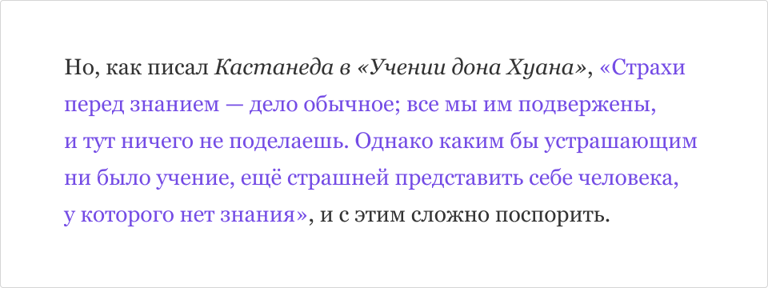
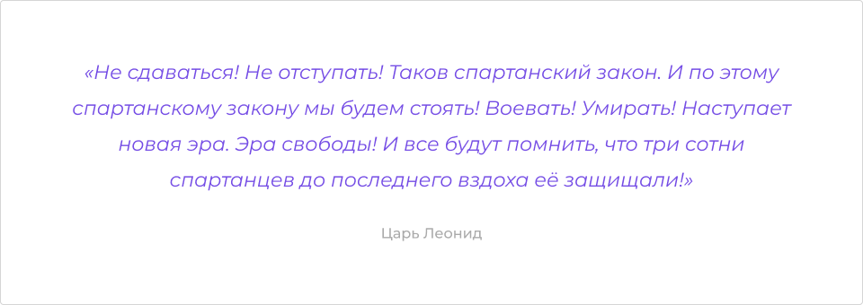
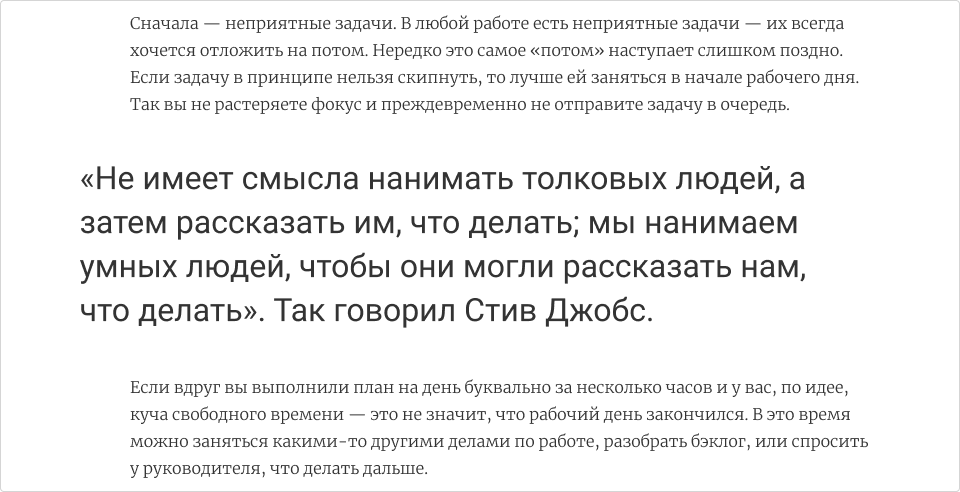
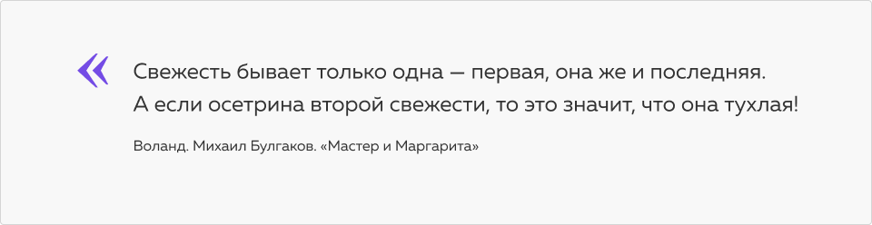
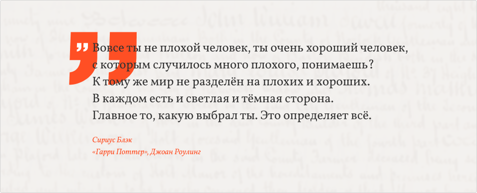
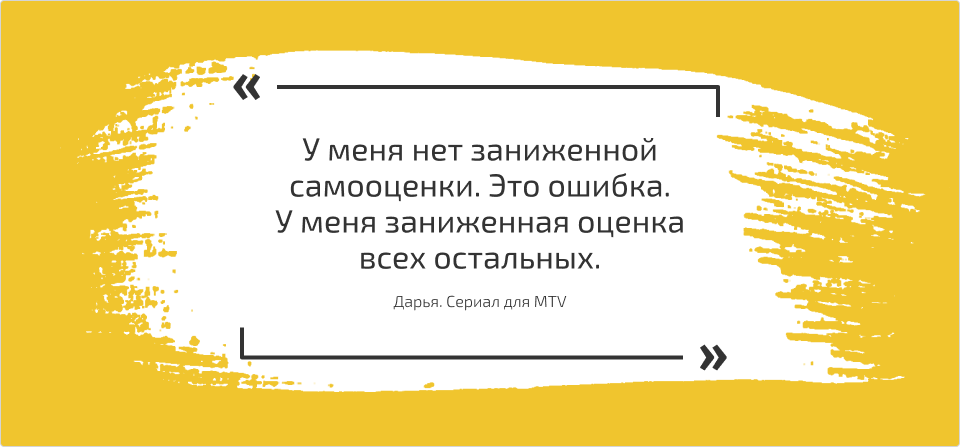

Мы учим основам семантической вёрстки в главе «Разметка текста».
Семантическое значение цитаты — внешний контент, то есть <q> — это строчный элемент, содержащий материалы не уникальные, имеющие другой источник. А <blockquote>, соответственно, тег для выделенных, вынесенных в отдельную секцию цитат.
Цитата внутри текста может верстаться тегом <q>
и не выходит из абзаца. Такие цитаты могут быть выделены
другим начертанием. До и после содержимого тега <q> браузер автоматически проставляет кавычки подходящего для языка документа вида. Для русского языка проставляются „лапки“ или «ёлочки». Переопределить кавычки можно с помощью CSS-свойства quotes:
{
quotes: "открывающая кавычка в юникоде""закрывающая кавычка в юникоде";
}
Вместо <q> можно просто использовать принятые на вашем сайте кавычки, спецификация разрешает это. Использовать <q> для контента, не являющегося цитатой (для сарказма или переводных слов, выделяющихся кавычками) — не семантично.
Цитата встроена в абзац, наклон в источнике — по умолчанию, саму цитату мы выделили цветом
<p>Но, как писал <cite>Кастанеда в «Учении дона Хуана»</cite>, <q>Страхи перед знанием — дело обычное; все мы им подвержены, и тут ничего не поделаешь. Однако каким бы устрашающим ни было учение, ещё страшней представить себе человека, у которого нет знания</q>, и с этим сложно поспорить.</p>
Мы же поговорим об отдельных и специальным образом оформленных цитатах.
Они оборачиваются в тег <blockquote>: это не только текстовый элемент, но и элемент для разметки секций (спецификация). Это означает, что у цитаты могут быть свои заголовки, хедер и футер и текстовые элементы.
Про то, как работать со спецификацией, есть шорт «Спецификация W3C или WHATWG». В целом ничего не изменилось, разве что в мае 2019 принято решение что актуальная спецификация будет в html.spec.whatwg.org.
У цитат есть своя специфика вёрстки. Например, есть атрибут cite, который также может выступать как тег <cite>,
оба применяются для указания источника (не только для
источника-сайта, но и для автора высказывания, для названия
произведения, ссылки на первоисточник). Атрибут cite нужен для соблюдения авторского права, визуально он не отображается:
<blockquotecite="https://aldous-huxley.net">Если бы двери восприятия были чисты, все предстало бы человеку таким, как оно есть – бесконечным.</blockquote>
Вот пример оформленной цитаты:
Цитата сделана отдельным блоком, подпись обособлена, есть рамка слева
<blockquoteclass="quote"><p>Всякий человек нуждается в том, чтобы над ним иногда посмеялись. Иначе мы начинаем относится к себе слишком серьезно.</p><cite>«Игра престолов», Джордж Р. Мартин</cite></blockquote>
В случае, если это не цитата
в полном смысле слова, а акцентная мысль, более важное
предложение в потоке текста, будет правильнее верстать такую мысль
другими тегами, например, <p> и <strong> с классом, или <figure>.
<!-- Тег <strong> означает что-то срочное, важное --><p>Каждый раз, когда мы размышляем о том, какой тег будет корректнее с точки зрения семантики, в Академии улыбается один наставник.</p><p><strong>Читайте спецификацию, о еноты!</strong></p><!-- Тег <figure> означает некую автономную сущность внутри потока --><p>Иногда, встречаясь в спецификации с новым знанием, мы загораемся желанием применить именно его, это новое обретённое знание.</p><figure>
Сверяйтесь со спецификацией как можно чаще. Браузеры обрабатывают код по спеке, разработчики пишут код по спеке — и у нас всё вместе хорошо работает.
<figcaption>Совет по работе со спецификациями</figcaption></figure>
Это вопрос семантической вёрстки,
и мы считаем, что разделять цитаты (со внешним
источником) и акцентные мысли правильно и удобно для
пользователей и роботов.
Цитата простая, незатейливая, без дополнительных элементов
Самый
стандартный вариант оформления цитаты — «поиграть
со шрифтами». Например, укрупнённый шрифт, изменённый цвет, другое
начертание: курсив или полужирное. Возможно другое семейство шрифтов,
увеличенное межстрочное расстояние, возможно, все буквы будут прописные.
Обычно у подписи кегль меньше, а начертание контрастнее.
Цитата встроена в абзац, наклон в источнике — по умолчанию, саму цитату мы выделили цветом
<blockquoteclass="quote"><p>Не сдаваться! Не отступать! Таков спартанский закон. И по этому спартанскому закону мы будем стоять! Воевать! Умирать! Наступает новая эра. Эра свободы! И все будут помнить, что три сотни спартанцев до последнего вздоха её защищали!</p><cite>Царь Леонид</cite></blockquote>
Второй по типичности — то же
самое, но в дополнение появляется обводка или фон. Фон
обычно неброский, просто заливка. Обводка может быть со всех
сторон, только слева, или сверху и снизу.
Цитата встроена в абзац и выделена рамками по бокам
<blockquoteclass="quote"><p>Самые ошибочные умозаключения людей суть следующие: вещь существует, следовательно, она имеет право на это.
</p><cite>«Человеческое, слишком человеческое». Фридрих Ницше</cite></blockquote>
Рассмотрим ещё один пример. Это вроде как цитата, но в данном контексте это акцентная мысль. Стоит подать именно так.
Пример стилизации обратного отступа
<article><p>Сначала — неприятные задачи. В любой работе есть неприятные задачи — их всегда хочется отложить на потом. Нередко это самое «потом» наступает слишком поздно. Если задачу в принципе нельзя скипнуть, то лучше ей заняться в начале рабочего дня. Так вы не растеряете фокус и преждевременно не отправите задачу в очередь.</p><pclass="accent">
«Не имеет смысла нанимать толковых людей, а затем рассказать им, что делать; мы нанимаем умных людей, чтобы они могли рассказать нам, что делать». Так говорил Стив Джобс.
</p><p>Если вдруг вы выполнили план на день буквально за несколько часов и у вас, по идее, куча свободного времени — это не значит, что рабочий день закончился. В это время можно заняться какими-то другими делами по работе, разобрать бэклог, или спросить у руководителя, что делать дальше.</p></article>
Зачастую
цитата оформляется с помощью акцентных кавычек, они могут быть
вставлены как символы шрифта или юникода, а могут — как
графика.
Опишем максимально «закрученную» цитату.
В начале
ставятся укрупнённые открывающие кавычки по типу буквицы. Это
удобно, «дёшево» с точки зрения занимаемого места, абсолютно
очевидно для пользователя, может быть довольно красиво. Размер этих
кавычек и их расположение бывает очень оригинальным,
у них может измениться цвет и даже семейство шрифта. Или
их можно отрисовать и заверстать на сайт как графический
элемент. В примере ниже кавычка — это изначально символ шрифта
Oranienbaum, но мы её подключим отдельным
векторным изображением, чтобы не загружать весь шрифт ради одного
декоративного символа.
Цитата с укрупнённой открывающей кавычкой по типу буквицы
<blockquoteclass="quote"><p>Свежесть бывает только одна — первая, она же и последняя.
А если осетрина второй свежести, то это значит, что она тухлая!</p><cite>Воланд. Михаил Булгаков. «Мастер и Маргарита»</cite></blockquote>
В оформлении появляется закрывающая кавычка. Или кавычка «переезжает» под текст.
Цитата с целыми двумя открывающими кавычками
<blockquoteclass="quote"><p>Вовсе ты не плохой человек, ты очень хороший человек, с которым случилось много плохого, понимаешь? К тому же мир не разделён на плохих и хороших. В каждом есть и светлая и тёмная сторона. Главное то, какую выбрал ты. Это определяет всё.</p><cite><spanclass="character">Сириус Блэк</span><br><spanclass="author">«Гарри Поттер», Джоан Роулинг</span></cite></blockquote>
В оформлении цитаты может появиться обводка (выглядит как <legend>) или фоновая подложка, например, в виде мазка кисти, или паттерн, или декоративные полосы.
Цитата с фоновой подложкой и обводкой
<article><blockquoteclass="quote"><divclass="quote-inner"><p>У меня нет заниженной самооценки. Это ошибка. У меня заниженная оценка всех остальных.</p><cite>Дарья. Сериал для MTV</span></div></blockquote></article>